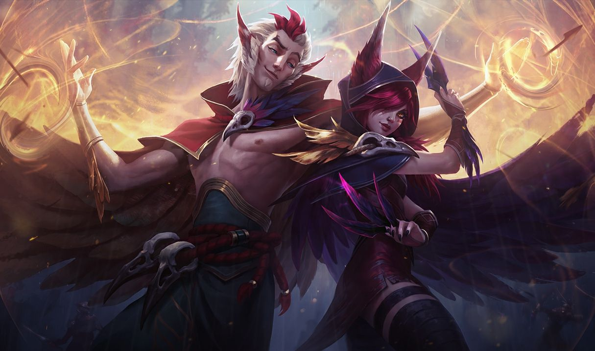

자야
자야
자야, 저항하는 자
Xayah, the Rebel

1. 배경
2. 스킬
2.1. 패시브 - 관통상(Clean Cuts)
연인의 귀환: 자야와 라칸은 동시에 귀환할 수 있습니다.
2.2. Q - 깃털 연타(Double Daggers)
2.3. W - 죽음의 깃(Deadly Plumage)
두 번째 칼날이 챔피언에게 적중하면 1.5초 동안 자야의 이동 속도가 30% 상승합니다.
라칸이 근처에 있으면 함께 이 스킬의 효과를 받습니다. 단 자야가 대상을 공격해야 라칸의 이동 속도가 상승합니다.
2.4. E - 깃부르미(Bladecaller)
미니언 상대로는 50%의 피해를 입힙니다.
적은 깃털에 맞을 때마다 받는 피해가 5%씩 감소하여 최소 10%의 피해를 받습니다.
2.4. R - 저항의 비상(Featherstorm)
대상으로 지정할 수 없는 유닛은 이미 영향을 받은 상태가 아닌 한 적의 기본 공격이나 스킬에 영향을 받지 않습니다.
유체화 상태인 유닛은 다른 유닛과 충돌하지 않습니다.
자야는 공중에 뜬 상태로 움직일 수 있습니다.
3. 장점
원거리 딜러 중 최상급 생존 및 역공 능력
우수한 광역딜, 지역 장악 능력
위의 장점을 통해 나오는 폭발적인 후반 캐리력
종합적으로 우수한 밸런스
공격형 서포터이지만 성장이 필수가 아님 (서포터)
원거리 역할군 중 쉬운 조작 난이도
라칸과의 특별한 시너지
4. 단점
높은 포지셔닝 난이도
높은 수동성

저작물은 CC BY-NC-SA 2.0 KR에 따라 이용할 수 있습니다. (단, 라이선스가 명시된 일부 문서 및 삽화 제외)